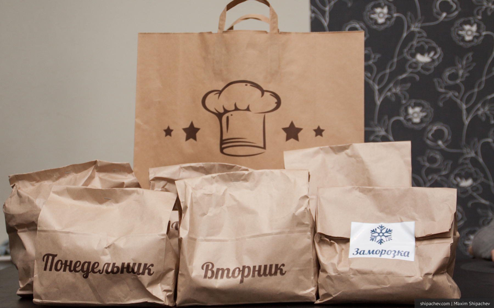
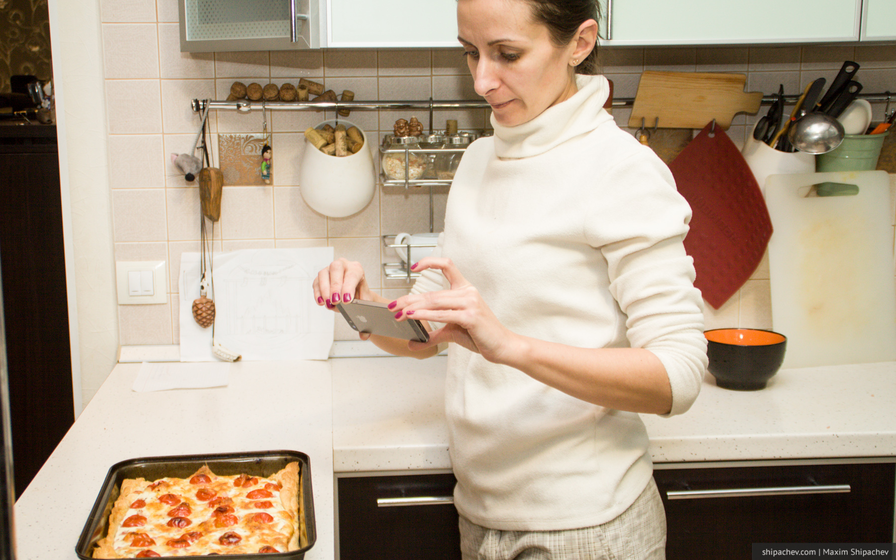

Сейчас я расскажу вам секрет приготовления… Давайте признаемся честно. Дома мы едим нормально один раз. И этот один раз — ужин.
И ужин наш, особенно, если ты с 9 до 18 на работе, плюс по полтора часа на мосту в пробке, не отличается разнообразием. Хорошо, если тебя зовут Александр Винокуров и ты умеешь и любишь готовить, а, если нет?
Опять же, походы по магазинам. Всегда голодный, а значит корзина набита печеньем, сосисками и прочим джанк-фудом. А каждый поход в магазин это минус 2 тысячи рублей (в долларах, конечно, меньше).
Уже около 2 месяцев мы (и ещё десятки кемеровчан) понятия не имеем об этих проблемах. Ужинаем сытно, разнообразно и полезно. На готовку тратим по 30-50 минут в день. Экономим деньги и нервы. В магазин ездим только за вином.
Секрет в том, что мы пользуемся сервисом «Твой ужин». Это не уже привычная кемеровчанам служба доставки еды. Вернее еду привозят, но готовить её нужно будет самим.
Каждое воскресенье к нам приезжает молодой человек с огромным пакетом из хипстерской крафтовой бумаги. В пакете лежат 6 пакетов поменьше.
В пяти пакетах расфасованные на 5 дней недели ингредиенты + ещё один пакет с заморозкой.

Всё, что вам необходимо будет делать в ближайшие 5 рабочих дней, это достать содержимое пакета и приготовить из него вкусный ужин.

Рецепты и подробная технологий приготовления упакованы в мультифору (файл, если вы зашли на сайт из Москвы).
В пакете есть буквально всё, что нужно для готовки. Вплоть до чеснока и трёх лавровых листиков.
Все рецепты в обязательном порядке содержат либо мясо, либо рыбу, либо птицу.
Рецепты за два месяца не повторялись ни разу, и не читайте дальше, если вы ещё не обедали. На этой неделе мы ужинали так:
-
Понедельник: Бризоль — мясная лепёшка со сметанно-чесночным соусом и овощами
-
Вторник: Свиные отбивные с розмарином в сливочном соусе с гречкой
-
Среда: Азиатская лапша с телятиной, овощами и грибами шиитаке
-
Четверг: Запечённая скумбрия, фаршированная чесночным сыром с картофельными дольками
-
Сегодня будем кушать курицу, запечённую с травами и лимоном с слоёном тесте.
К делу ребята подходят ответственно. Это не просто компоновка наборов. Продукты перефасовываются и пакуются в точности как этого требуют рецепты. Всё в отдельных пакетиках.
Стоимость такого пакета на двоих человек на 5 дней — 3200 рублей. Сумма, конечно, тебя сейчас удивила. Но, посчитав, ты поймёшь, что экономишь гораздо больше. К тому же, съесть вдвоём, то, что готовится из этого пакета реально нереально. Семье с двумя детьми, как у нас, пакета «На двоих» хватает легко. Как правило, если в рецепте были грибы, которые не ест сын, я ещё и обедаю вчерашним ужином. Люблю такие рецепты.
Если заказывать до среды на будущую неделю то можно рассчитывать на скидку в 200 рублей.
Проблема питания среди недели решается полностью. Есть небольшой побочный эффект. Привыкшие к плохой еде дети могут начать относиться к вам хуже. Так, я посоветовал сервис маме одноклассницы сына. Мама довольна, а вот одноклассница теперь говорит, что сделал это я зря. Сын тоже периодически заставляет покупать сосиски и сыр.
Ещё одним приятным бонусом будет то, что по рецептам легко учиться готовить. Кто знает, может ваш ребёнок будущий шеф-повар ресторана. А может и вы.

Для моих читателей приготовлен небольшой бонус. Если при первом заказе вы назовёте кодовое слово «Дневник наблюдений» (на самом деле это два кодовых слова), то вам на этот заказ дадут скидку в 250 рублей.
Есть наборы на одного человека и пробные наборы, правда на них скидку не дадут.
Заказать можно на сайте или по телефону 8 (905) 910-91-19.
Кодовое слово «Дневник наблюдений»